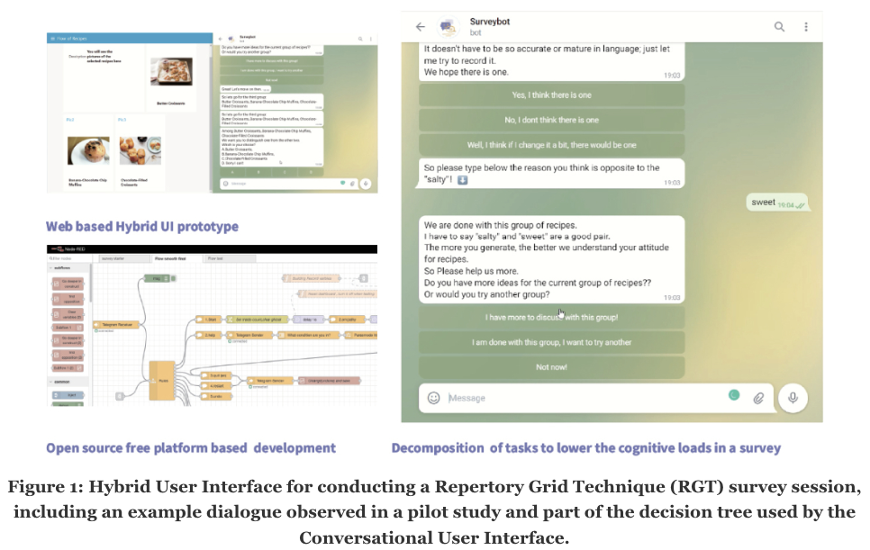

Conversation-Based Hybrid User Interface for Structured Qualitative Survey
A Pilot Study Using Repertory Grid
Yunxing Liu, Eindhoven University of Technology, Industrial design, Netherlands, y.liu10@tue.nl Jean-Bernard Martens, Eindhoven University of Technology, Industrial design, Netherlands, j.b.o.s.martens@tue.nl
Abstract
Conversational user interfaces (CUIs) have the potential to substantially influence current practice in diverse application fields, one important example being the way in which online surveys are conducted. Currently, CUIs are mainly applied to help improve the user experience with quantitative surveys. We describe the development of a Hybrid User Interface (HUI) prototype that combines a Graphical User interface (GUI) and a CUI to conduct a fully automated but structured qualitative survey according to the Repertory Grid Technique (RGT). This paper describes a pilot study that we conducted to inform the design of the HUI and to converge to a prototype that is sufficiently mature and robust to be used in a more extensive follow-up study. Our experiences with developing this HUI may help others avoid pitfalls and profit from the tools and lessons we have learned as part of our design process.

1 INTRODUCTION
ToolTip: Slide to summarize the introduction at different levels of granularity. This is an AI-assisted tool that summarizes text using BART, a transformer based language model trained for text summarization. (The original idea was to allow users highlight any text of interest, then summarize at any granularity of interest.)
Summary (Maxlength=100): Recent advances in CUI (Conversational User Interface) research and practice have created a trend towards using chatbots to improve the user experience (UX) with quantitative surveys . Qualitative
User surveys are frequently used for end-user data collection in both business and research. They are used to understand user motivations and judgements. Recent advances in CUI (Conversational User Interface) research and practice have created a trend towards using chatbots to improve the user experience (UX) with quantitative surveys [5], which in turn leads to other survey benefits, such as higher response rates. Conversational interaction can help to convert mechanical work into a more socially acceptable interactivity, increasing user engagement and enjoyment [12]. CUIs also lead to new business opportunities, as demonstrated by recent changes in online services that conduct quantitative surveys (primarily questionnaires). We have also witnessed the emergence of tools that bring CUI development within reach of non-experts such as designers and HCI practitioners.
Even though the extension from quantitative to qualitative surveys with the help of CUIs seems obvious, we are not aware of any studies exploring this in much detail. Qualitative research methodology is diverse, with distinct approaches stemming from social sciences, including psychology, sociology, anthropology, ethnography and phenomenology [9]. Next to the in-person interviews implied by many methods, related approaches such as telephone or online interviews have also been used to reach a wider audience. We can however safely argue that qualitative surveys tend to rely heavily on human abilities of language understanding and improvising that are deemed outside of the reach of current chatbots. Due to the limitations in current NLP (nature-language processing), template-based chatbots [22, 31, 34] or topic-specific response activation [14, 23, 27] are therefore the most frequently studied alternatives. The conclusion that could be drawn is that chatbot performance is currently insufficient to replace humans for less structured tasks, such as conducting qualitative surveys.
To push the boundaries, we nevertheless decided to focus on applying CUIs for automating structured qualitative surveys. We hypothesized that current chatbot technology might be sufficiently advanced to enable a system that helps people finish at least some qualitative surveys without human intervention. The first step in dealing with such an ambitious objective was to focus on a specific qualitative survey method, and we selected the Repertory Grid Technique (RGT) for this purpose. The RGT is a widely adopted qualitative interview technique that relies on a stepwise and well-structured process. Instead of relying on self-disclosure, which may require substantial and intelligent prompting by an interviewer, the participants in an RGT session are mostly expected to reflect on how they assess products and services offered to them [11]. The major disadvantages of RGT, according to literature, can be summarized as cognitively demanding (for both participants and the experts conducting the interviews), time-consuming (interviews with participants have been reported to take up to 2 hours) and requiring appropriate training of interviewers and an ability to stick to the Repertory Grid methodology.
The cognitive load of complex tasks can be reduced by breaking them down into less complicated subtasks, which is known as decomposition [16, 26, 30, 31]. We can indeed decompose the RGT into smaller, more specific activities. This was partly done to better understand the requirements for CUI and GUI support that the diverse subtasks pose, and led us to distribute interactions between CUI and GUI in a way that we expected a priori to result in lower cognitive load for each of the steps involved in the RGT. For example, tasks that require overview and visual support, such as selecting elements in the initial stage of the RGT, as well as highly repetitive tasks, such as attribute scaling in the final stage of the RGT, were expected to be easier to perform with a GUI, while the core of the RGT method, which consists of guiding the user in identifying personal constructs, seemed very well suited for a CUI.
Our research explores the feasibility of augmenting or even automating human tasks and skills like qualitative surveys with the assistance of CUIs, which can involve Artificial Intelligence (AI) in the form of NLP, through design, prototyping and user evaluation (i.e., we adopt a research through design approach). We started by designing a HUI that supports all steps in a RGT and used different versions of it to conduct pilot experiments to establish the effectiveness of the implemented communication and interaction strategies. These pilot studies lend credibility to our research hypothesis that users can indeed execute the entire workflow of RGT without human agency support. Thus, our belief that we can achieve online RGT automation with proper interaction design by means of a HUI platform has been reinforced, and the resulting prototype is now considered sufficiently stable and usable to be deployed in a more extensive study that can strengthen the external validity of our hypothesis.
As a growing number of researchers, amongst others in Human-Computer Interaction (HCI), are showing an interest into expanding their interest from GUIs to CUIs, we think it worthwhile to share our experiences, as this can hopefully help others to avoid some of the pitfalls and to profit from the tools and lessons that we have adopted as part of the design process that we describe here.
2 BACKGROUND AND MOTIVATION
We argue that even though some technical issues (mostly in relationship to AI and NLP) restrict the application of CUIs in tasks such as qualitative surveys, it is still possible to conceive and build relevant systems by carefully balancing technical and user requirements. Some CUI researchers have concluded that even with recent advances in NLP and NLU, the UX of CUI's can still pose a substantial problem during application. For example, the research group of Nielsen and Norman has established that “both voice-only and screen-based intelligent assistants work well only for minimal, simple queries that have fairly simple, short answers”. They also claimed that many detailed issues could be fixed with more thoughtful design without the need for advancing natural language and dialogue processing [3]. Although some useful guidelines for designing a CUI could be derived from the challenges that they identified [6, 34], we also concluded that several important aspects remain unexplored. For example, what kind of information do chatbots need to assist users in their conversations, and how do we develop a more detailed understanding of which tasks or scenarios can be supported with current technology.
We propose that new CUI explorations should focus more on improving the UX and efficiency in concrete tasks than on insisting on additional technical innovations (such as new applications for customer service bots and single-round task bots [1, 4, 15], creating chatbot APIs for developers, or approaches for corpus collection and model training [21, 25] for NLP). We hypothesize that CUI development does not necessarily require improved CUI technology but may also come about by looking for applications where CUI technological limitations can be handled by carefully balancing the interface design, e.g., by only assigning some subtasks to CUIs.
2.1 Conversational User Interfaces and Hybrid User Interfaces
CUI is a concept that is also referred to by other names such as conversational agents, or chatbots (proposed in 1994 by Michael Mauldin). Recent technology developments have enabled a surge in CUIs and Virtual Personal Assistants (VPAs), leading to concepts such as intelligent personal assistants and digital personal assistants becoming mainstream in the development of CUIs [18]. In 2016, technology giants started to promote related services or APIs [34], such as Alexa and Siri, that aimed at a more natural user experience. Because of technical limitations, the dialogues that such VPAs can handle are mostly at the level of a natural and intuitive interaction model [19]. For specific but more complex tasks, such as medical or stock analysis [13] or the qualitative surveys that we are interested in, the use of VPAs remains challenging; experiments with applying CUIs for such complex tasks are therefore interesting from a research perspective. One frequently-mentioned benefit of CUIs over GUIs is that they are expected to lead to a more human-like interaction [22]. CUIs can for instance filter the available information [3] and guide users stepwise through an interaction, sharing only limited information in each step. CUIs can use text, buttons, tables, memes, videos, and interactive cards to share such information. They are typically guided by selections that users make from a limited number of alternatives offered to them. The interaction hence unfolds over time, and expectations about how and when to take turns and assign initiative over time [15] are crucial to its success. GUIs, on the contrary, can provide a much richer (visual) context that can be assessed and interacted with, often in a non-prescribed order, which means that they can be complementary to CUIs in many respects. Therefore, instead of pushing CUIs as an alternative for GUIs, we focus on how both approaches can complement each other and be combined in ways such that the resulting HUI has advantages over both CUI and GUI.
2.2 Repertory Grid Technique and Qualitative Surveys
Many qualitative survey methods rely on the participant(s) communicating, either in-person or through a remote connection, with a human agent actively trying to elicit information and gain design-relevant insights [2]. In our study, we adopt a specific qualitative survey method, i.e., the Repertory Grid Technique (RGT). RGT is a cognitive mapping approach that aims to understand how individuals and groups derive meaning from the artefacts in their environment. The RGT is based on Personal Construct Theory, as promoted by Kelly in the 1950s. The RGT consists of four major stages (i.e., pre-interview, interview, review, and analysis) and differs from other cognitive mapping techniques in that it is highly personal, easy to administer, structured, and facilitates both qualitative and quantitative analysis [8]. An important disadvantage of RGT is that it is time-consuming (some researchers report sessions of 90 minutes to create a 9 × 9-inch rep-grid [35]). We are not aware of any other attempts to create a platform that allows to run RGT in a fully automated way.
3 INITIAL SYSTEM DESIGN AND PILOT STUDY
We describe the double-diamond design process [7] (discover, define, develop and deliver) that we followed to establish our system's detailed architecture and iterate to a robust prototype.
3.1 Discovery
The previous sections describe the discovery process that led us to focus on the development of a HUI that supports qualitative surveys according to the RGT.
3.2 Define
In the define stage, we develop the insights from the discovery stage into more concrete design activities. We defined the actions required for the different subtasks in the RGT and considered their cognitive load. We conducted a study of existing RGT practice to understand the behavior of participants and interviewers, and of the conversational patterns involved. First, we collected a corpus of such dialogues from a preliminary study in which a human interviewer performed several RGT sessions. Next, we built a rule-based decision tree to model our observations, and as an intermediate step towards defining a CUI for the same purpose. While developing this decision tree, we adopted a scenario in which participants would be “self-motivated” to revise their personal constructs before storing them into the final grid that would subsequently be completed by a more quantitative evaluation of selected products by means of the identified constructs. The final decision tree requires 111 nodes to implement all the possible replies from the users.
3.3 Develop (how to support the RGT method by means of a HUI)
The different stages (pre-interview, interview, generating the grid) in the RGT method have very different characteristics with distinct (technical) requirements, as shown in Figure 3.
3.3.1 Interpret stage 1 Pre-interview and topic selection.
As the tasks implied by the RGT method are likely to be unfamiliar to most participants, the researcher creating the survey is advised to provide explicit material that can be used as a rich illustration for what to expect (e.g., a stepwise walkthrough with an example of the different activities involved).
We wanted to create an example that was sufficiently rich but also familiar to many researchers and participants, which is why we selected recipes as the elements to be used in our pilot experiment. Food-related assessments can be influenced by many factors. Research on food choices have focused on characterizing individual cognitions and behaviors [32], but less on contextual factors and variations between individuals. The pilot test confirmed that most participants agreed that the topic was well-chosen. Former experiments [10, 33] with RGT have also made a connection to food-related judgements.
3.3.2 Interpret Stage 2 Creating personal constructs. Interviewee Familiarization.
It is good practice in empirical research to provide users with a brief introduction at the beginning of an experiment of what to expect. We created a chit-chat session for this purpose. With an NLP (natural language processing) powered chatbot, the user can chit-chat while developing an understanding of the tasks ahead. The chatbot also provides instructions on how to start the chatbot and how to control the dialogue flow in the CUI.
Element Identification. To ensure that the personal constructs being generated are meaningful (and hopefully also original), users must be familiar with the elements (i.e., the recipes) used in eliciting such constructs. The approach that we adopted is to provide a large sample of possible recipes to choose from and to let participants select six recipes that are used by the system to create (20 possible) triads.
Constructs Elicitation. Kelly (1955) has defined a personal construct (the primary purpose of RGT is to identify them) as “a personal way in which two elements are perceived to be alike and, in the same way, different from a third one”, and this is the task that is put to the participants. We use the decision tree that we have derived before to subdivide the construct elicitation into smaller subtasks that a rule-based chatbot can handle. The required information about the elements in a triad (i.e., details and pictures of the recipes) are presented visually in the GUI, in support of the conversation conducted by the CUI.
Laddering. Laddering is a crucial step in generating personal constructs by means of the RGT. It makes RGT into a unique method. Laddering is a way to arrive at personal constructs that make sense to the participants themselves and the outside world. One of the problems that laddering is trying to address is that the respondent does not “know” the answer. It has been suggested that successful laddering should make the respondent feel on a voyage of self-discovery [29]. We have experimented with several alternative dialogue models for the chatbot, some of them containing examples of constructs for different, bit related, elements (e.g., vegetables, fruits). An important goal of the pilot experiments was to develop a more detailed understanding on how to perform such laddering with the help of a CUI.
3.3.3 Stage 3 Generating the Grid.
Scaling, e.g., on a 7-point Likert scale, can be used to link the provided elements and elicited constructs in a repertory grid, where each element in the grid contains the scaling result for one element on one specific construct. Since this requires repeated scaling (more specifically, of 6 times the number of identified constructs), a GUI is deemed most adequate for this task. The produced grids can subsequently be analyzed to reveal the diversity in user perspectives [17].
3.4 Technical features of the prototype
We used open-source software and free platforms to build the HUI for the RGT survey system. We explored various ways to develop this platform, and eventually settled on a Node-red platform [24] for web development. We attempted other tools including IBM Watson, Google dialogue flow and other NLP products, but found them to be too complex to use and/or insufficiently robust to experiment with. We use Node-red in combination with Red-Bot [28], as this latter extension allows to build a full-featured chatbot for Telegram.
3.4 Technical features of the prototype
We used open-source software and free platforms to build the HUI for the RGT survey system. We explored various ways to develop this platform, and eventually settled on a Node-red platform [24] for web development. We attempted other tools including IBM Watson, Google dialogue flow and other NLP products, but found them to be too complex to use and/or insufficiently robust to experiment with. We use Node-red in combination with Red-Bot [28], as this latter extension allows to build a full-featured chatbot for Telegram.
3.5 Deliver
ToolTip: Slide to summarize section 3.5 at different levels of granularity.
Summary (Maxlength=100): Users tried out all stages in the interface, after which they provided feedback and suggestions for improvements . We still had an unstable system during the first round of our pilot study . The instability was mainly caused by flaws in the dialogue tree leading to instances where the conversation would “hang” (participants 1 and 4) In the second round of the pilot study, a screen recording was performed to capture the user interaction in more detail (with the users’ permission and approval by our
In the delivery stage, we generated a prototype for an automatic RGT survey with a HUI.We aimed to improve our original prototype through small pilot studies, trying to improve the UX and/or robustness of varying prototypes through user observation and feedback. Users tried out all stages in the interface, after which they provided feedback and suggestions for improvements. We conducted eight sessions with two different prototypes, each prototype being tested by four participants. We adopted a structured experimental setup as explained in Table 1. Users would not communicate with the researcher unless a bug interrupted the survey. We used an online Miro Board [20], which visualized the survey structure, to support users in the exit interview to provide feedback on all subtasks. In the second round of the pilot study, i.e., with the last four users, a screen recording was performed to capture the user interaction in more detail (with the users’ permission and approval by our ethical review board).
We still had an unstable system during the first round of our pilot study. By watching the participants interact with the chatbot and GUI, we identified several detailed problems in the dialogue. The instability was mainly caused by flaws in the dialogue tree leading to instances where the conversation would “hang” (participants 1 and 4). To remedy some of the problems observed in the first round of our pilot study, we improved our design in the following aspects: more detailed explanations of the task expected of the users (in the beginning), more accessible examples used as illustrations, expanding the chatbot's possible replies to make the conversation less repetitive, and rearranging the ways of calling out the GUI (by means of clickable URL links).
In the second round of the pilot study, we improved the structure of the exit interview and encouraged participants to describe scenarios that could lead to improved CUI performance. From the participants’ responses, we could deduce that the improvements from the first round had been quite successful, as we received no more comments about unclear guidance. Some participants mentioned in the Miro Board that simulating real-life talking (instead of typing) could be an excellent way to leverage the experience. Some participants commented that the element pool was not tailored very well to their cultural background and dietary customs and proposed to provide elements with a better fit to their personal experiences (e.g., recipes that people have experience with). We also noticed that participants were trying to understand the objective and outcome of the survey in their communication with the chatbot. The participants in the second round expressed that there was little or no cognitive burden to finish the flow of the RGT survey. This reinforced our belief that the implementation of RGT in an online scenario is indeed feasible.
We realized during the experiment that the conversational laddering included two distinct activities, laddering up and down. In the laddering up, users are asked to report how important individual personal constructs are for their overall preference, and this is a rather straightforward process. In the “laddering down”, the part in which users are encouraged to inspect their personal constructs and possible refine them (e.g., make them easier to understand for an outsider), the chatbot is currently inspiring the users by providing examples (from a fixed pool of responses that were generated by a human operator conducting an RGT experiment in another but related application field). The chatbot currently has no in-depth understanding of the user replies, which is why more content-specific and flexible feedback from the chatbot will require natural language understanding to extract meaning from the user replies. Despite such limitations, all participants in our experiment were able to complete the RGT survey without human feedback or intervention.
4 DISCUSSION, LIMITATION AND FUTURE WORK
We can analyze the findings from our pilot study by paying attention to several aspects, i.e., the UX and usability of the hybrid interface, as well as the quality of the answers collected in the RGT survey and the time required. While some researchers have argued that it is hard to perform iterations in the early stages of a chatbot design process, as it involves prototyping and testing a potentially unstable chatbot with end users [6], we have found that this is manageable with a rule-based chatbot, as we can directly observe where the users spend most of their time and can easily pinpoint problems in the dialogue flow, as they tend to correspond to flaws in the decision tree. We found out that integrating the CUI and GUI into a single web-based system should be preferred to using separate platforms from the GUI and CUI alongside each other, even if this is at the cost of some reduced features in the CUI and/or GUI, as this helps to create a more consistent and fluent UX (e.g., avoiding switching between different UIs).
The main problem we are currently facing is the efficacy of the laddering, as this stage makes the highest demands on the natural language understanding. From the participants’ perspective, the chatbot requires them to explain the specific reasoning that they use to distinguish one of the elements from the other two, while the system needs to decide when the laddering has advanced far enough or if additional prompting should be attempted. Users are also expected to create bipolar constructs, identifying both extremes to their constructs. The presence of a GUI may potentially help to simplify the task for the user, as suggestive information, for instance in the form of a word cloud with synonyms, antonyms, etc., can potentially assist users in completing this task.
Since we focused primarily on the usability and feasibility of the system, the data collected in our pilot study was limited. Firstly, we did not record all data, e.g., technical and ethical restrictions limited the extent of screen and dialogue recordings. In hindsight, a more detailed analysis of observed interactions could have been used to establish and understand problems, especially with the decision tree used in the CUI. Secondly, when we designed the system, we did not pay much attention to participants’ acceptance of the chatbot. Subtle differences between the prototypes used in the first and second round of the pilot study may have stayed unnoticed. Participants may have had a negative impression of a chatbot for various reasons. Therefore, we argue that a comparative study that addresses such aspects is critical. Thirdly, the current research lacks concern for participants’ possible “treadmill experience” when being confronted with repeated requests (loops in the conversation). The laddering stage in the current prototype is likely to profit the most from an improved AI that could help to avoid such occurrences. Other concerns that we hope to address in the future is how to reduce the reliance on self-motivation in participants, and how to create a more balanced conversation (several participants voiced their impression that they needed to fulfill the requirements of a chatbot which was in charge, although this also holds partly in case a human interviewer conducts the survey). We plan to focus on improving this laddering effectivity and the related user experience in future iterations of our system.
A more extensive and controlled experiment is planned in which a traditional RGT survey, using a human interviewer, will be compared to an automated (online) RGT survey with the proposed HUI and in which more quantitative and qualitative information will be collected from a larger number of participants. The repertory grids created by the alternative RGT surveys can be analyzed quantitatively [25], and the insights gained from such analyses are another way, next to time efficiency and UX (e.g., measured using validated UX questionnaires), to establish the effectiveness of alternative RGT procedures.
ACKNOWLEDGMENTS
This work is supported in part by the scholarship from China Scholarship Council (CSC) under the Grant CSC N.CSC201906210083
REFERENCES
- Matthew Russell Bennion, Gillian E. Hardy, Roger K. Moore, Stephen Kellett, and Abigail Millings. 2020. Usability, acceptability, and effectiveness of web-based conversational agents to facilitate problem solving in older adults: Controlled study. J. Medical Internet Res. 22, 5 (2020), e16794.
- Virginia Braun, Victoria Clarke, Elicia Boulton, Louise Davey, and Charlotte McEvoy. 2020. The online survey as a qualitative research tool. Int. J. Soc. Res. Methodol. 24, 6 (2020), 1–14.
- Raluca Budiu and Page Laubheimer. 2018. Intelligent assistants have poor usability: A user study of Alexa, Google Assistant, and Siri. https://www.nngroup.com/articles/intelligent-assistant-usability/
- Heloisa Candello, Claudio Pinhanez, and Flavio Figueiredo. 2017. Typefaces and the perception of humanness in natural language chatbots. In Proceedings of the 2017 Chi Conference on Human Factors in Computing Systems. New York, NY, USA, 3476–3487.
- Irene Celino and Gloria Re Calegari. 2020. Submitting surveys via a conversational interface: An evaluation of user acceptance and approach effectiveness. Int. J. Hum. Comput. Stud. 139 (2020), 102410.
- Yoonseo Choi, Hyungyu Shin, Toni-Jan Keith Monserrat, Nyoungwoo Lee, Jeongeon Park, and Juho Kim. 2020. Supporting an iterative conversation design process. In Extended Abstracts of the 2020 CHI Conference on Human Factors in Computing Systems. 1–8.
- Design Council. 2005. What is the framework for innovation? Design Council's evolved Double Diamond. Retrieved November 14, 2020 from https://www.designcouncil.org.uk/news-opinion/what-framework-innovation-design-councils-evolved-double-diamond
- Aaron Mosiah Curtis, Taylor Michael Wells, Trevor Higbee, and Paul Benjamin Lowry. 2008. An overview and tutorial of the repertory grid technique in information systems research. Commun. Assoc. Inf. Syst. 23, 3 (2008), 37–62. https://doi.org/10.17705/1cais.02303
- Charissa Fritzen-Pedicini, Susan C Bleasdale, Lisa M Brosseau, Donna Moritz, Monica Sikka, Emily Stiehl, and Rachael M Jones. 2019. Utilizing the focused conversation method in qualitative public health research: A team-based approach. BMC Health Serv. Res. 19, 1 (2019), 1–7. https://doi.org/10.1186/s12913-019-4107-0
- N Gains. 1994. The repertory grid approach. In Measurement of food preferences. Springer, 51–76.
- Devi Jankowicz. 2004. The easy guide to repertory grids. John wiley & sons.
- Soomin Kim, Joonhwan Lee, and Gahgene Gweon. 2019. Comparing data from chatbot and web surveys: Effects of platform and conversational style on survey response quality. In Proceedings of the 2019 CHI Conference on Human Factors in Computing Systems. New York, NY, USA, 1–12.
- Paula Lauren and Paul Watta. 2019. A conversational user interface for stock analysis. In 2019 IEEE International Conference on Big Data (Big Data). IEEE, 5298–5305.
- Jingyi Li, Michelle X Zhou, Huahai Yang, and Gloria Mark. 2017. Confiding in and listening to virtual agents: The effect of personality. In Proceedings of the 22nd International Conference on Intelligent User Interfaces. New York, NY, USA, 275–286.
- Kate Lister, Tim Coughlan, Francisco Iniesto, Nick Freear, and Peter Devine. 2020. Accessible conversational user interfaces: Considerations for design. In Proceedings of the 17th International Web for All Conference. New York, NY, USA, 1–11.
- David Marr. 1982. Vision: A computational investigation of visual representation in man. Phenomenol. Cogn. Sci. 8, 4 (1982), 397.
- Jean-Bernard Martens. 2019. Interpreting the diversity in subjective judgments. In Proceedings of the 2019 CHI Conference on Human Factors in Computing Systems. New York, NY, USA, 1–11.
- Michael McTear, Zoraida Callejas, and David Griol. 2016. The dawn of the conversational interface. In The Conversational Interface. Springer, 11–24.
- Michael McTear, Zoraida Callejas, and David Griol. 2016. Toward a Technology of Conversation. In The Conversational Interface. Springer, 25–50.
- miro. 2021. The visual collaboration platform for every team. Retrieved January 11, 2022 from https://miro.com/
- Anupam Mondal, Monalisa Dey, Dipankar Das, Sachit Nagpal, and Kevin Garda. 2018. Chatbot: An automated conversation system for the educational domain. In 2018 International Joint Symposium on Artificial Intelligence and Natural Language Processing (iSAI-NLP). IEEE, 1–5.
- Robert J Moore, Raphael Arar, Guang-Jie Ren, and Margaret H Szymanski. 2017. Conversational UX design. In Proceedings of the 2017 CHI Conference Extended Abstracts on Human Factors in Computing Systems. 492–497. https://doi.org/10.1145/3027063.3027077
- Nika Mozafari, Welf H Weiger, and Maik Hammerschmidt. 2021. The chatbot disclosure dilemma: Desirable and undesirable effects of disclosing the non-human identity of chatbots. In International Conference on Information Systems.
- Node-RED. 2021. About: Node-RED. Retrieved September 8, 2020 from https://nodered.org/about/
- Deborah Nolan and Duncan Temple Lang. 2015. Exploring Data Science Jobs with Web Scraping and Text Mining. In Data Science in R: A Case Studies Approach to Computational Reasoning and Problem Solving. CRC Press, 457–505.
- Markus Pantsar. 2021. Cognitive and computational complexity: Considerations from mathematical problem solving. Erkenntnis 86, 4 (2021), 961–997.
- Astrid M Pütten, Laura Hoffmann, Jennifer Klatt, and Nicole C Krämer. 2011. Quid pro quo? Reciprocal self-disclosure and communicative accomodation towards a virtual interviewer. In International Workshop on Intelligent Virtual Agents. Springer, 183–194.
- RedBot. 2021. RedBot. Retrieved November 28, 2021 from http://red-bot.io/
- Thomas J Reynolds and Jonathan Gutman. 1988. Laddering theory, method, analysis, and interpretation. J. Advert. Res. 28, 1 (1988), 11–31.
- Jan-Philipp Stein, Markus Appel, Alexandra Jost, and Peter Ohler. 2020. Matter over mind? How the acceptance of digital entities depends on their appearance, mental prowess, and the interaction between both. Int. J. Hum. Comput. Stud. 142 (2020), 102463. https://doi.org/10.1016/j.ijhcs.2020.102463
- Kent A Stevens. 2012. The vision of david marr. Perception 41, 9 (2012), 1061–1072.
- P Stratton and K Bromley. 1999. Families’ accounts of the causal processes in food choice. Appetite 33, 1 (1999), 89–108
- David MH Thomson and Jean A McEwan. 1988. An application of the repertory grid method to investigate consumer perceptions of foods.
- Ming-Hui Wen. 2018. A conversational user interface for supporting individual and group decision-making in stock investment activities. In 2018 IEEE International Conference on Applied System Invention (ICASI). IEEE, 216–219.
- Grafton Whyte and Andy Bytheway. 1996. Factors affecting information systems’ success. Int. J. Serv. Ind. Manag. 7, 1 (1996), 74–93.